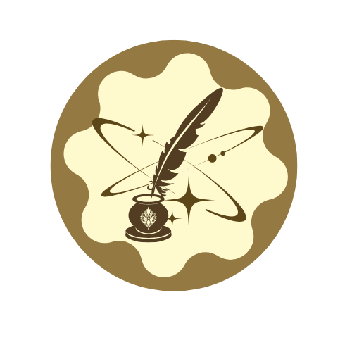
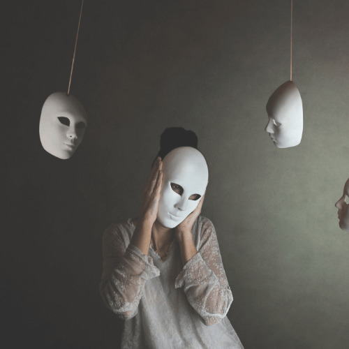
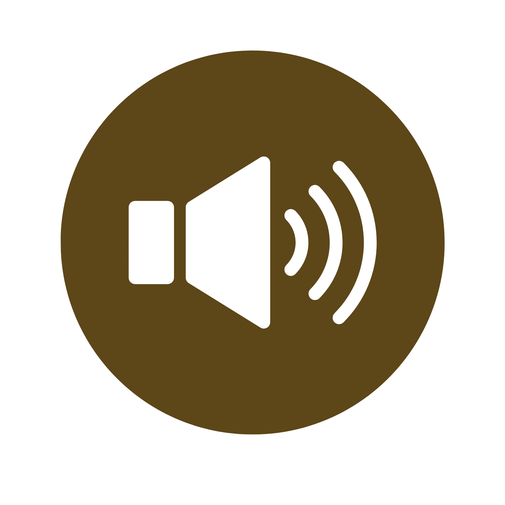
The sun kindled way too light
Golden rays felt too hot
Maybe it was your hands
Or your presence
But no fool would deny
That something warm
Was moving too fast
Yet too slow
We would fight every Fridays

Lustful smell spattered on innocence’s air.
His perfume howling with ecstatic caveat rose.
My nostril ensnared as it falter its gates of dove.
His mouth of malevolent silky teeth,
Deceiving my vacuous ears of beguile lure.
Strokes of jolliness on my lips
Amidst his promise of a room, amassed in ice
cream cones.
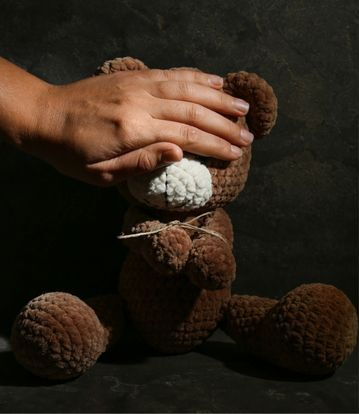
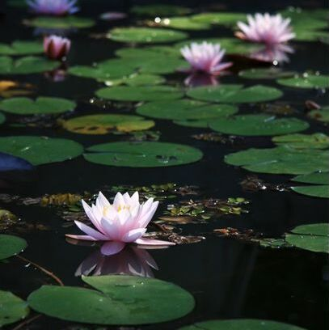

I am a lotus flower
Like sun. Like light.
I blossom the silkiest pink
in a medley of verdant greens
Like thunder. Like wound.
I am nothing but an adversity
sown through roaring waters
and angry breeze
sometimes storms tries to wash me down,
sometimes floods tries to drown me up,
Imbued in subtle growth, nuanced below my throat,
There it resides within my heart,
Benignly pounding all the veins that were sown,
I'm harbored with a mind swirling in crimson hues,
While I glimpse you in the corner of your shadow.
I would fondly trap you
In the vast expanse of the void,
Somewhere far;
Somewhere distant,
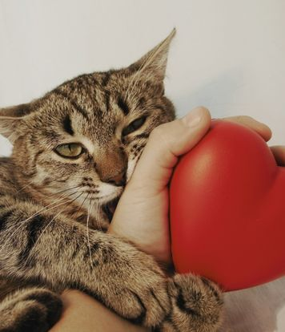
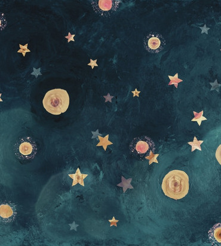
Beside a shabby, colossal rock,
My eyes follow his, inadvertently
Tilting our heads, we see
The outstretched world,
Where the dark aurora skies are encrusted with luminescent stars
“Those are the dead souls watching us.”
I tear my befuddled stare against the fondly skies
And heave them eyes towards his gleaming soul,
Looking at me with bittersweet smiles
When sonorous laughter haunts you down,
Boost all the mellow in your ears
When internal angst thorns you down,
Don’t let its aftermath shatter you anew
When drastic pressure conquers all in you,
Let your tears flow and ease you
When embarrassment dims in you,
Don’t let it unnerve you all the way through
When grief bores something within you,
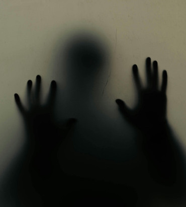
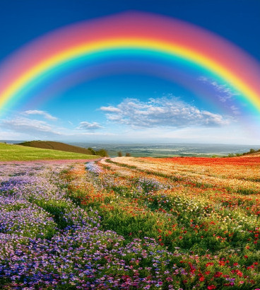
Twenty years from now,
I shall search for the clouds of voices.
Voices that were densely thundering and deafening,
But never vague and nuanced.
I shall become one with the voices of the throngs.
Filled with sounds from a proud community,
A community in which I belong.
I must’ve been with them in their blobs.
I had always lingered at the penumbra,
Staying in the shadows of darkness
Like a rat that hides in the bushes.
I had always kept this one thing so anonymous.
And only I knew about it.
Until they sensed my action.
Until they find themselves on a mission:
A pursuit to know this abstract subtleness.
And the last thing that I'd do is realize
That it might be over.
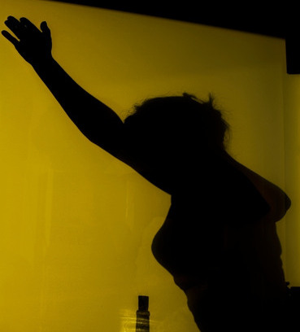
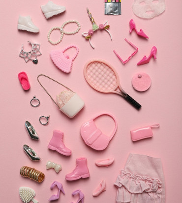
Barbie.
Her name's so enticing;
Perfect to whom
That has majestic beauty.
A name given and entrenched
To a woman that's so blessed
But bespangled upon
A lingering misery.
Beyond bitter it seems
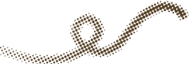
What if I confessed to be
More flawed and wretched than a serial killer?
Would you laugh?
Would you ridicule?
Would you fear me?
Or perhaps…….believe in me?
If I were to share that I am gay,
What emotions would you display?
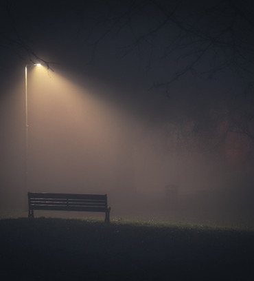
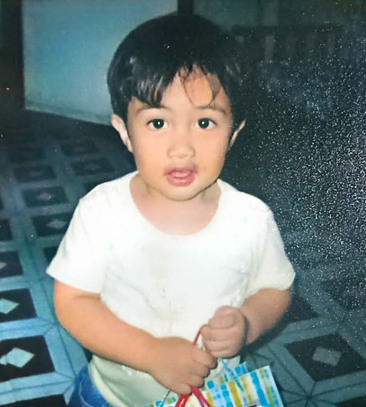
One thing I hate about you
Is just how easy it is to doubt yourself
And feel like things never truly go the right way
Sometimes it feels too monotonous
To think about how every aspect of you
Seems lacking or simply put, “Never enough,”
Yet you’ve worked so hard and even persevered
To venture your way out of your norm world
There were so many quandaries...
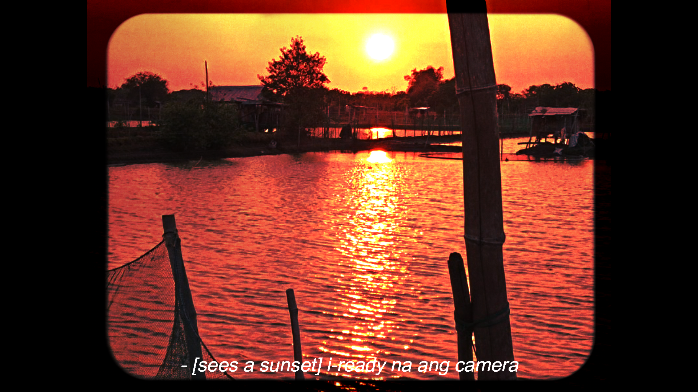
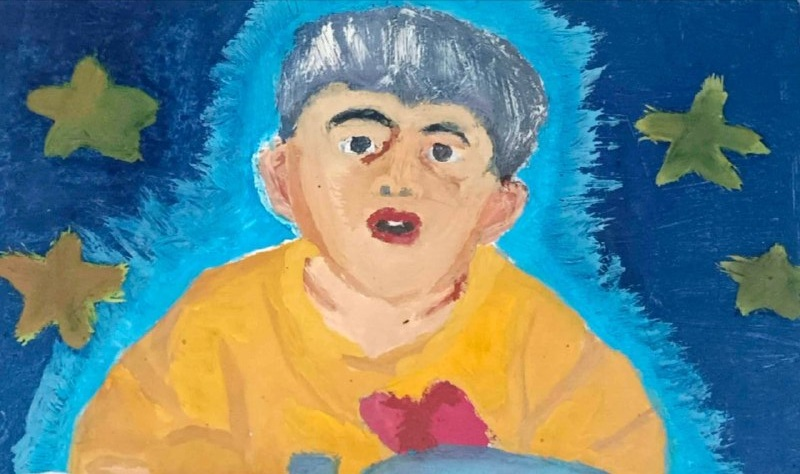
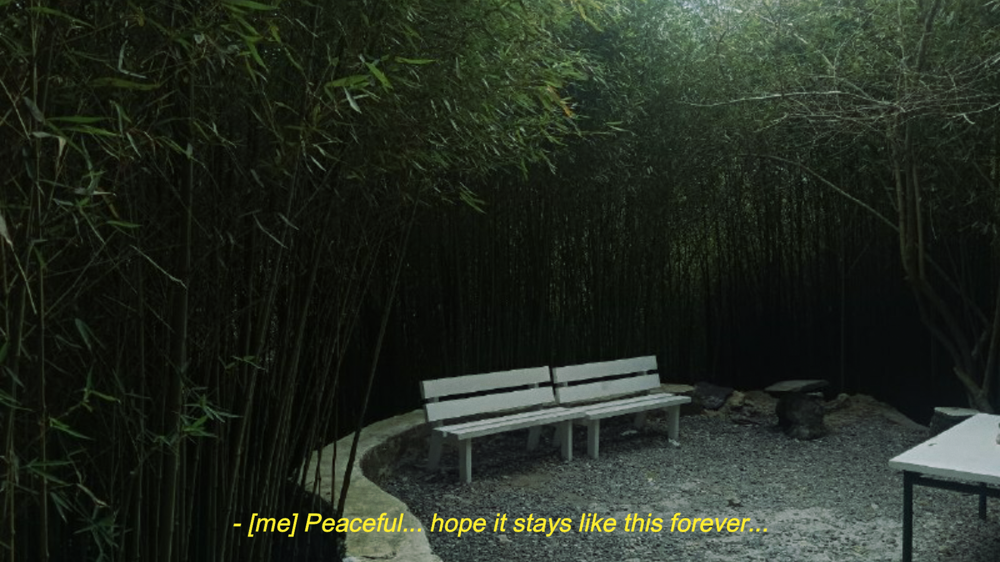
Proditiophobia
The sun kindled way too light
Golden rays felt too hot
Maybe it was your hands
Or your presence
But no fool would deny
That something warm
Was moving too fast
Yet too slow
We would fight every Fridays
Over a piece of butter cookie
Play Sylvanian
Until it was time for dinner
We knocked random doors
And ran as far as we could
You drew our future mansion
And I drew our future car
You used to borrow anything
And never fail to break them
We’d laugh at our stupidity
Share clothes after some endless excuses
Do pillow fight at a random midnight
Eat mangoes together
After longing one for months
We promised to stay
to love
to laugh
to live by the sense of friendship
together…
Yet it never happened
I get to eat all the cookies all by myself
Which is weird because
Someone used to fight with me for the last piece
Dinner was too early
Because we haven’t played sylvanian yet
Somebody was knocking at my doors
But it wasn’t you anymore
Our drawings always felt complete
Until I realized we’ve forgot to draw ourselves
My things stood perfectly fine
Because there’s no one else who would borrow them
Crying at my stupidity doesn’t seem so well to me
Because we used to laugh at them before
My clothes smelled fresh today
Which is odd because you didn’t say a word to me
Those pillows? No one used it anymore
Which is crazy because we used to fight with them, remember?
You said you liked mangoes
Until I saw the yellow pills you took
And the outburst dripping uncontrollably
Under your lips…and your neck…
And the crimson cuts around you that I cannot fathom
Why didn’t you say you were longing for blades instead?
When you promised that we’ll live by together forever
Did you mean it in the other side of the world?
Because I guess you didn’t mean it anyway
Even so, I’m proud to say
That we’ve lived together after all
And that your warmth
Has been smoldering fresh
In your cold-tarnished tombstone
Ian,
I hope you didn’t forget your promise
Because that promise looked different, it seems.
Sister, Me too
Lustful smell spattered on innocence’s air.
His perfume howling with ecstatic caveat rose.
My nostril ensnared as it falter its gates of dove.
His mouth of malevolent silky teeth,
Deceiving my vacuous ears of beguile lure.
Strokes of jolliness on my lips
Amidst his promise of a room, amassed in ice cream cones.
He grabs my staunch arms to his vicious hands, juxtaposed,
Dragging them like a leash
Tied with tamed slavery mind.
His hands of filthiness
Gradually pushes the shabby lock in sinister touch.
Silently uncanny and hushed.
Oddly enough, nothing but my inner-kid’s enchantment roused
In the flavored ice cream that slavered my youthful mouth.
Vanilla, different somehow, the taste hints a subtle unknown.
My clueless lips ponder the eccentric fluid taste.
Something one could never know.
His unsettling smirk vented malice through his lips,
Watching me, digging deeper in twisted grips.
He pulls my body onto his lap,
Perplexed on the tender material,
Vigorously rubbing underneath my jumper jeans.
Distress escapes my lips, a cry of pain,
As he anchors me against the embellished walls.
My frail hands polarized by his arms layered in evil horns
As if I was a strand of longganisa meat
Hanged in the peddler’s market stall.
His sweltering lip
Savors all the purity bespangled under my body.
Haunting my tarnished soul poured in the names of disgust and self-loathe.
The threshold between my knees, battered,
As if thorns of needles are stitching its sore flesh.
My face of anguish, uninhibited,
While teal ribbons rained in the furious gloomy skies.
That day I remember
Before the blindfolded gavel thrummed its prowess sound,
And justice ebbs in the battleground.
Ten years have passed,
Down on the ground,
An ice cream lingers in my sight.
Snakes swirling on its circular shape
Like Medusa's chandelier light.
Matches ignite in my sulking hands,
Throwing it hardly on the ice cream I despise.
Barbaric flames crumbles it down
As rivulets of tears coated my face.
Phoenix and butterflies blossoms in the town,
As I find the words I can hardly say,
"Sister, me too."
Lotus Flower
I am a lotus flower
Like sun. Like light.
I blossom the silkiest pink
in a medley of verdant greens
Like thunder. Like wound.
I am nothing but an adversity
sown through roaring waters
and angry breeze
sometimes storms tries to wash me down,
sometimes floods triesto drown me up,
sometimes heat tries to wilt my petals,
and sometimes the murky waters
tries to suckall the purity all over my roots and body
life tries to kill me,
but here I am,
defying all that hinders me down
standing steadfast with buttress roots
and graceful petals nestled in pristine beauty
just when everyone thought I’m slowly dimming
I eventually came out rekindling in an ember of idyllic pink
I am the cleanest flower that a bee could have ever smell
and even in the most dreadful nature known to be,
I find querencia upon the seemingly arduous world
of machination in front of me.
Beleaguered in Love
Imbued in subtle growth, nuanced below my throat,
There it resides within my heart,
Benignly pounding all the veins that were sown,
I'm harbored with a mind swirling in crimson hues,
While I glimpse you in the corner of your shadow.
I would fondly trap you
In the vast expanse of the void,
Somewhere far;
Somewhere distant, beyond where my vision can scope.
Yet, it seems stubbornly inherent,
As if your vanity is fated to be seen,
And I find myself imprisoned within those eyes,
My neck slaughtered by a thousand glances.
I behold you like a siren, bewitched,
My eyes anchored to the character I perceive,
Entangled in every dimension where you’d be.
But why do I fear the feeling you fostered?
Why do I hate this tethered affinity for bridled love?
I long to cradle your face bestowed by the celestial angels of heaven.
I would dare to yell the majesty that you are.
I would chase your hand amidst the thunderous rain,
Protecting you like a saint of pain.
I'm willing to bleed just so your voice stays
Within the chambers of my ear.
Yet, here I am…with a tear upon my face.
Suddenly, I find myself beside my weathered clock,
Desperately attempting to turn its hands back.
Memories of the past invade my thoughts,
Those doomed relationships begin to butcher
The sanctuary of my mind.
The stinging embrace of hushed loneliness,
The dearth of bliss,
And the tormenting ache gradually engulf me once more.
The smile I plastered every Monday
Turns into the tears that cascade every Friday.
And as I hereby look at you once again,
All I could think of are the smoldering scars,
Leaving me petrified of loving anew,
For I reside in a cosmos
Where the painful past relentlessly follows me back.
One Million Stars: One Million Kilometers to Connect Us
Beside a shabby, colossal rock,
My eyes follow his, inadvertently
Tilting our heads, we see
The outstretched world,
Where the dark aurora skies are encrusted with luminescent stars
“Those are the dead souls watching us.”
I tear my befuddled stare against the fondly skies
And heave them eyes towards his gleaming soul,
Looking at me with bittersweet smiles
And tears pouring all over his face
As if…as if it will be the last time I’ll ever meet him,
Ever again.
A heavenly white tunnel calls for his presence
As a powerful smell of death stained the blustery air
I can feel that end is near,
So I firmly held my hand around his,
Unwilling to let go of him,
But pieces of him came fading in gradually
And then it broke our bounded hands
And then our promises
And then our connections
The desolated grief
Bores my chest, mind, and soul,
Knowing that a mystical being took a part of me
That I cannot recoup
It all took an ample time
To fathom everything
The man I hold dear
Is no longer within my desperate reach
And all that was left is a remnant of his smiles,
Vividly smoldering in my mind
So now that I am all alone on this rock, one moment ago,
I stared yet again in this plethora of stars bedecked in the skies,
Knowing he is currently one of the million stars,
Looking and brilliantly smiling at me
For though I am uncertain of which star is he,
He is at least one million kilometers above me
And as I smile along with him,
I mumbled something under my lips,
I will miss you, Lolo
When the Arduous Life Tries to Kill You
When sonorous laughter haunts you down,
Boost all the mellow in your ears
When internal angst thorns you down,
Don’t let its aftermath shatter you anew
When drastic pressure conquers all in you,
Let your tears flow and ease you
When embarrassment dims in you,
Don’t let it unnerve you all the way through
When grief bores something within you,
Express your burden to starkly heal you
When stress plagues you down,
Let the nature serenely mend you
When loneliness quivers you,
Ask someone to firmly hug you
When failure ebbs all that you have,
Don’t let despondency dictate you
When things just go the wrong way,
Keep on going anyway
Trust me,
It’s just another day of life
When life becomes a tough fight
And hope seems to fade in sight,
I dare you to never give up
Never cease
Never stop
Valiantly fighting it back
It may take a decade of mental war,
But you’ll get there
And one day,
There comes a moment
You’ll realize
That somehow
You’re finally clean
Twenty Years
Twenty years from now,
I shall search for the clouds of voices.
Voices that were densely thundering and deafening,
But never vague and nuanced.
I shall become one with the voices of the throngs.
Filled with sounds from a proud community,
A community in which I belong.
I must’ve been with them in their blobs.
Not a watcher from afar who looked at them all day long.
I shall bring the message into dissemination.
Our words radiating in every ear,
Enticing them to burn the aching past that bore them in sorrow.
A past with a myriad of infamous memories
Enriched in a quest to seek acceptance and validation,
Yet reimbursed with condemnation.
Twenty years from now,
I shall see the news with an abundance of tears.
Not for a gay man bombarded with wounds and bruises,
But for a humanity that embarks us on love and liberty.
A news so easy to dream,
Now seen explicitly clear to feel true and real.
Twenty years from now,
I shall be parted from the rings of hell,
For I must follow the serene and pacified melodies.
Not in the dynamics of slaps and cries
That swallowed my ears.
My sleek hands shall manhandle you with care,
For you shall not be in the heaves of their belt’s vicious force
Neither the litany of wrenching words,
Beseeching you to leave their house
That unveiled to be the nightmare’s home.
Twenty years from now,
I shall let my progeny play in seventh heaven.
Give them the very toy that made their majestic souls enliven.
Instead of other toys that showered their faces with antipathy,
Asking me if they had done something so unforgiven
To be rendered such a piece that is so abhorrent.
I shall give my boys their dolls and makeup that made them excited.
Share the cars with my girls as they requested.
For I would prefer being pitted against the gossip of my neighbor,
Than let my children play in the scare of bliss,
Where they are unsettled with the toy that they had never longed for.
Twenty years from now,
I shall be anchored in the lexicality of forward,
That you shouldn’t go backwards and shield yourself against me,
That being gay isn't as disgusting as the world has painted it to be,
That sometimes people should learn to move forward towards me.
Forward: For I am a gay man that blossoms in camaraderie.
Not a devil that framed his image in malice and promiscuity.
Forward because he who have abhorred me for who I should be,
Is beyond more loathsome than a serpent can be.
Twenty years from now,
I shall open my Facebook with felicity,
Seeing every context with dominant glee
While I let myself wander in the presence of ease.
Can it stay like this, unlike before?
Before my eyes had swirled in the spaces of anxiety and fear.
Fear of scrolling towards the queer-hated post
That jolted my eyes and made them shear.
So much, though, that they were begging me to stop looking.
Telling me to please cease its function immediately.
As if they would rather pick the side of a dilemma,
Where my vision is an anathema.
As if they would prefer not to let me see,
Than let me move back in the thorns of the painful testimony
That haunts me to the highest degree.
Twenty years from now,
I shall be in the corners of my wall,
Lingering in the love of my man,
Who made me fall.
Oh, how much it had veered from the bitterness that I can recall.
Once, I was a little kid who stayed in these walls.
Hearing the familiar scars of my bully’s humiliation,
Mocking me as I’m an illness for being queer, he said.
A phrase so simple and short,
Yet ravaged me in a million of cannonballs.
Twenty years from now,
I would be my personal chaperone.
Not a nemesis that hurdled his clone.
I will dare myself to shine
In the place where life is abound,
Rather than die and suffocate
In the grueling waves of my closet.
I will keep on moving in my own direction
Despite the face of many rejections.
I will let myself be that ‘rainbow’
In a world spattered in shades of darkness.
I will embody the gay that I am
Because there is a prevailing beauty in gay
That needs to behold.
All that magic in twenty years.
I may truly crave your existence
And hate your absence.
I may recognize your essence
And love you for bringing a difference.
But as long as your name is in the future,
Every word will remain nothing but a mere dream.
So until then that everything is as real as it seems,
I will wait for you,
Twenty years.
They Will
I had always lingered at the penumbra,
Staying in the shadows of darkness
Like a rat that hides in the bushes.
I had always kept this one thing so anonymous.
And only I knew about it.
Until they sensed my action.
Until they find themselves on a mission:
A pursuit to know this abstract subtleness.
And the last thing that I'd do is realize
That it might be over.
They will search for my secret
In the trails of my rainbow closet.
They will look at me
In a different story.
They will look at me like a villain
Upon knowing my identity.
I looked at the clock,
Hoping its hands would turn back.
I begged Peter Henlein,
That maybe,
Just maybe I could restart.
I want to live back in the past
When they looked at me
In their smiles and love
Rather than the disgust and laughs.
They will disclose this identity.
They will try to paint me
As notorious as it can be.
They will fight with me
In an effort to change my identity.
They will counter me
Until they feel like it's victory,
That I'm denied of my rights and individuality.
They will challenge me
If they must.
And they will tear my heart apart
If they must.
It is a journey of survival
Through every slap and blood.
They will torment me with all their gust.
With every word. With every wound.
I shouted, "Save me!" on the furious ground.
Until then that I lost my ultimate spark,
Yet they will offer me no remorse
Or shame for something they've done.
Because having a gay child
Isn't as satisfying as it sounds.
I wish I woke up
In a new world.
A world different from how it used to be.
How I'm ready to change everything;
How I'm ready to force myself on a battleground,
Fighting for his right to savor the sense of haven;
Fighting for everything that he had long forgotten.
I wish I woke up
Without thinking of everything,
Without thinking if they will hurt me,
Without thinking if they will simply laugh at me.
But as reality becomes static,
The first thing I'd do is realize
That my wishes are a myth.
Because in a thousand of 'what if they won't?
There will only be one true answer.
And it would always be:
They will.
The Unorthodox Barbie
Barbie.
Her name's so enticing;
Perfect to whom
That has majestic beauty.
A name given and entrenched
To a woman that's so blessed
But bespangled upon
A lingering misery.
Beyond bitter it seems
That her life's bridled
By the human that she sees,
Hiding her genuine colors
From the tamed world herein.
She's seen to be
As impeccable as her beauty.
She's expected to be
The gleaming woman that she should be.
Her nails must be colored
In the spectrum of pink.
Her hairs must be styled
Like a princess in the west.
And her dress must be
A dazzling silky skirt
That flies accordingly with the wind.
She cries again,
Asking when it's going to change.
Since when were her nails
Colored in the hues of black?
Since when were her hairs
Styled like the boy in the fashion club?
And since when were her heels and skirts
Became suits instead?
She's bounded to be
The woman that Ken would fondly see.
She acts to be
Caressed in Ken's warmth of accompany
Just like how humans paint her to be.
She cries once more,
Wondering why she liked Barbies
And not Kens.
Nothing swallows her
But a dynamic quandary
And the thought
Of a polarizing pit,
Waiting to fruit
As events unfold
Before her eyes.
But as she realizes her reality,
She asks herself,
Isn't Barbie allowed to be
Attracted to whom she likes to be with?
Why strive for something
You're not destined to be?
Rainbow creeps profoundly
Through her veins
And heart,
And eyes,
And brain
As she realizes her urge
To be her genuine interior self
That echoes all over her body.
That day, she cries one last time
Not in the bitter shadows that she suffers,
But in the ease of all her masked jungle.
She is Barbie,
The Unorthodox Barbie.
Dear Human,
What if I confessed to be
More flawed and wretched than a serial killer?
Would you laugh?
Would you ridicule?
Would you fear me?
Or perhaps…….believe in me?
If I were to share that I am gay,
What emotions would you display?
Is it shame?
Anger?
Disappointment?
Embarrassment?
Sadness?
And confusion?
Or is it…. love?
Contentment?
Joy?
And delightment?
What will you do if I told you
My visage used to hide in a litany of surgeries?
Would you still look at me?
Would you punch me, barbarically?
Would you slap me in all of your prowess mighty?
Would you still adore my vanity?
Or would you burn me for betrayal,
deception,
resentment,
and… at least revulsion?
What happens if I were to unveil the secret about my hands?
Oh! How do you not remember those hands you used to caress?
Those hands that was never really as immaculate as they seem!
Those hands that used to be abound of sins.
Those hands anchored to clandestinely steal and sell
Amidst the battered scars,
crimson cuts,
smoldering bruise,
and handcuffs tied in every wrist.
Look at it once more,
Would you still touch them?
Would you still glorify its apparent majesty?
Or would you depart upon its seemingly
Abhorrent,
Atrocious,
Injurious,
Hideous,
Pitiful,
Or….immoral feature?
What will you tell me if I told you I’m a failure?
That things just doesn’t go the right way.
How will you see me if were to tell you,
“I am your pathetic, lost, miserable, and filthy fellow encrusted in loathe.”
Don’t lie to me.
Am I still your favorite son?
Am I still your amiable best friend?
Am I still the pride of your school?
Am I still the prodigy of beauty?
How about your hero?
Or your lovely and clever student?
Would I still be the love of your life?
What if I were those things I told you?
Would you still love me as tantamount as before?
Or would you butcher me with hatred to suffer….. in my regretful past?
Dear little Gian,
One thing I hate about you
Is just how easy it is to doubt yourself
And feel like things never truly go the right way
Sometimes it feels too monotonous
To think about how every aspect of you
Seems lacking or simply put, “Never enough,”
Yet you’ve worked so hard and even persevered
To venture your way out of your norm world
There were so many quandaries...
So much thoughts that you won’t be able to make it
Yet you decide to let yourself try it anyway
Sometimes you fail,
But most of them succeeded too!
And I think it would be so unfair to let
Those big things get disregarded
Just because all you think are those things
That could’ve been better
Do you remember ‘those’ times?
All those "How I wish I did better!"
All those "What if I was just as good as others?"
All those "Am I even in the right path?"
All those worries and jokes
Started from a random doubt
But even then it kept going...and...going...and...going
And since then, it never truly stopped from there.
In a point of post-crisis,
Those worries would never matter now do they?
It took you time to learn that life only gets better;
That everything about you wasn’t so bad at all,
Even more so that life continues to show you
That it is possible to conquer
Even when all you have is a gaslighted hope
That seems so fake.
As I enter your last teenage year,
There’s a multitude of things
That I would’ve have loved to tell you.
Some of it was not to take Computer Science(help)
And one thing that I have learned now
Is that it’s so incredibly important
To just be happy being you
Without fearing the prospect of life.
I now live by the quote,
“You can’t wait until life isn’t hard anymore
before you decide to be happy.”
And you just have to realize that.
There will be times when life will challenge you
And those moments when you aimed for redemption
Doesn't feel as comforting anymore
So what ever you want to do now, just so you can
be happy for a minute, DO IT!
Always choose to be happy because it is only
through smiles That makes an arduous life journey bearable.
Also, I learned that
There’s no point of fearing life in the future.
Our future is not promised;
There’s no guarantee of being successful or whatsoever.
But don’t let those stop you from savoring the present.
Some day, your dreams will make you step foot into reality
And by then you’ll live by in the simple words of
"I never knew I would made it."
And if things go rough for me and your adult self,
All I know is that you got our back.
Because your soul, heart, and blood will always
Stay as one and united, ever brave and happy, Gian.
All love from your growing self,
Gian